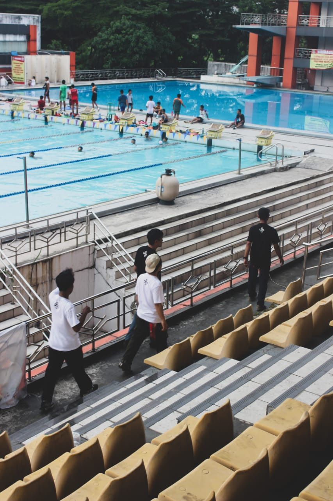

IT STARTED WITH A MINDSET.
SVRFACE lahir bukan sekadar dari keinginan untuk membuat pakaian. Kami lahir dari rasa muak terhadap tren yang datang dan pergi. Kami ingin membangun sesuatu yang bertahan lebih lama dari musimnya.
Dirancang di Bekasi, dibangun untuk mereka yang hidup di luar permukaan. Kami merancang setiap jahitan, setiap potongan, dan setiap grafis dengan satu tujuan: Intent (Maksud). Tidak ada filler, tidak ada noise—hanya sinyal murni.

Menunjukan bahwa setiap desain adalah hasil dari revisi dan imajinasi yang di tuangkan ke permukaan kain.
BUILT FOR THE STREET, REFINED FOR THE STUDIO.
Kami percaya bahwa identitas tidak diteriakkan, melainkan dikenakan. SVRFACE adalah seragam bagi mereka yang bergerak dalam diam, berkarya tanpa batas, dan menolak untuk menjadi biasa.
More than a brand. It's a mindset. Welcome to SVRFACE.